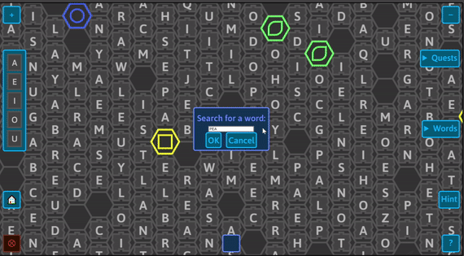
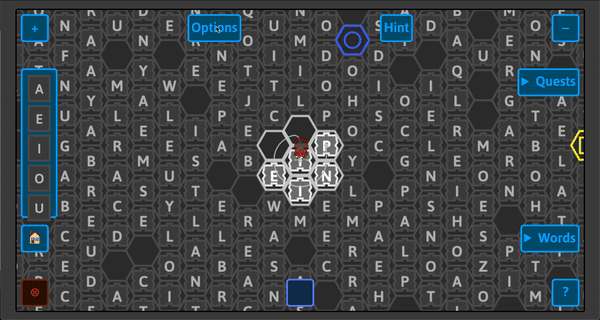

Summer 2020
The hint feature is a menu button that the user can click on and see if the word they typed in is in the current view they are on. If the word is present, the user is guided to any copies of that word. With the hint button, the user can click for the dialog to come up and be utilized, or just click the hint button again to make it disappear if they do not wish to use it. The user can also select cancel for the button to go away.
The word the user typed in the text box is saved when the user clicks OK. The current context is checked to see if the user’s input should be treated as case-sensitive or not. The first letter of the word is then searched, and then it checks to see if any of the letters around match the second letter of the word. If they don’t, that match is dismissed but if one or more do, it repeats the search around that new glyph to check for the next letter. Once it has done this for each letter of the word, the animation mechanism is used to briefly highlight the first letter of each copy of the word that was found.
We wanted to create this feature so that the user can get help if they get stuck searching for a specific word, or for part of a word. This feature could be particularly useful in quiz mode to look for a word from the custom list of words, although without restrictions, it may make things too easy. With limitations, the feature could act as a reward for the user.
 The gif above shows a demo of what the user would expect when they are in the home view and type ‘pea’ You can try yourself at: https://cs.wellesley.edu/~expressive/words
One challenge we faced was understanding the way the tiles in the canvas are handled behind the scenes. There were also mechanisms we were not familiar with such as creating an animation to reveal discovered word(s) or how to use different event handlers which we had to understand before creating anything.
Another challenge we faced in the larger project was designing a feature that is not based around the standard rhetorics of capitalist accumulation (e.g., just using points as an abstract reward). The hint feature was designed to supply an alternative reward that would be immediately useful instead of being accumulated in a potentially competitive fashion.
Right now, the user can use the hint as many times as they want; we hope to later modify it to limit the number of hints the user can utilize, and turn it into a reward derived from other mechanisms in the game. We also hope to explore different animations for conveying the location of discovered words. We might also need to change the way we search for words, because if the user zooms out more to search within a larger area, the time it takes to find the word(s) increases since we are looking letter by letter in a larger set of letters.
The avatar feature allows the player to pick an image to represent them as the player plays the game. As soon as the game is loaded, an avatar will appear at the center of the unlocked tiles. There is now an options menu that allows the player to change the avatar that is currently on the board. As the player connects and deletes the glyphs they have selected, the avatar will follow along the path. Once a word is completed, the avatar does a little jump animation at the end.
We wanted to create this feature so that players can be more engaged with the game. An avatar could give a player a sense of connection to the game by seeing a character that represents them on the game board. We are also hoping this feature lays the foundation for other characters in the game as well!
The avatar follows the glyphs as the player swipes and plays an animation once the word is completed.

The player has the option to change the random avatar that is placed on the center of the board through the options menu.
A challenge we faced when designing and animating the avatar was learning the SVG format and how to animate for the first time. It took a while to figure how to convert between different files and to finally get it working and displaying in the game. Another challenge was understanding how HTML elements and event handlers work on a web page to accurately place our avatar on the game board, because including an external drawing into the game needed to use a different system from the system used for placing the board tiles.
We hope that in the future the avatar feature will be modified such that players will be able to provide their own avatar drawing and animation or otherwise customize their avatar. This also provides the foundation for the possibility of non-player characters (NPCs) that could appear when playing the game as well as a stronger sense of player identity in a word game.